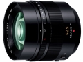

该镜头等效焦距为85mm，是松下M4/3系列中最明亮的一款镜头。镜头采用14片11组光学结构，含2片非球面镜片、1片ED镜片以及1片UHR超低色散镜片。9片圆形光圈叶片，可制造出诱人的焦外散景。
价格虽然较贵，但出片还真的是有徕卡味道 配以快速对焦和防抖的加持，各卡口中等效85 1.2规格，操作性最佳
全开锐度优秀，到1.8已经锐不可当，发色极佳 1.2的超大光圈，防抖加持，对焦迅速，成就了夜拍神器。NOCTI不是随便标的 具有特色的焦外散景，非常诱人 得益于m43小底，景深适度，不易拍出左眼焦内右眼焦外的怪异画面 足够B格的外观
1，价格较高，实际就是42.5 1.2的规格，应该和50L类比。6000价位其实相对合理，但43画幅上愿意做此投资的人群会比较小 2，体积重量在43定焦中略大，不过和50L相比其实也不算过大。为保证成像质量14片11组的结构居然比适马50A还多，另外全金属镜身增加了镜头手感和B格，但这些都会反映在体积和重量上。配合E-M1或GX7，外观非常协调，但不适合受众更广的GM1等紧凑机身，出货量必然很少 3. 放大倍率略低，如果能做到40就更好了，1.2光圈就不奢望做到与1.7版相同的30cm最近对焦，但50cm也只是其他家一般标头的水平